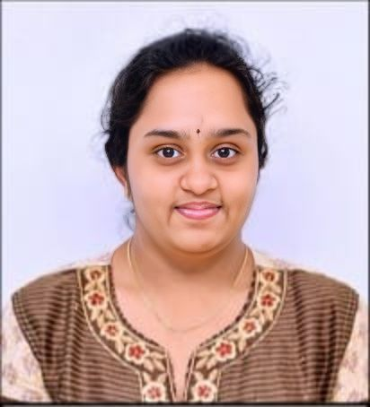

This is a showcase of my work and skills.
Date of Birth : 15/02/2003
Marital Status : Unmarried
Nationality : Indian
Father Name: V V N Murthy
Mother Name: V Anuradha
Equipped with a good foundation in computer science and proficiency in programming languages, I am eager to apply my technical skills and collaborate with a team of experienced professionals. I am deeply committed to continuous learning, dedicated to delivering high-quality code, and adept at solving complex problems. My goal is to contribute to the development of innovative software solutions that positively impact users and drive organizational success.
Stanley College Of Engineering And Technology For Women Bachelor Of Engineering
Percentage-75%(pursuing)
Narayana Junior College Intermediate
Percentage-84.8%
Bharatiya Vidya Bhavans Public School
Percentage-73%
C
JAVA
PYTHON
HTML,CSS
MY SQL
COMPUTER NETWORKS
To develop a script that can automatically generate a compelling story based on detected objects of an input image and a selected genre.
Certification on Programming Essentials in c by CISCO
Certification on Al in real world by UPGRAD
Certification on Introduction to Cybersecurity by CISCO
Self learning and motivated
Quick learner
Class representative
Communication with confidence
Can work both in a team and alone
Reading
Browsing Internet
You can reach out to me through the following channels: